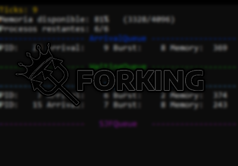
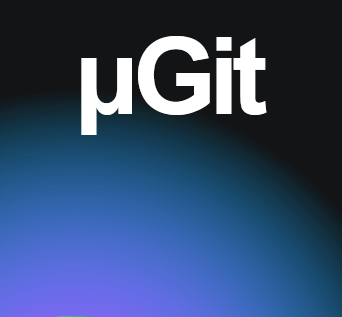

¡¡Página mejor vista desde Firefox y una pantalla 1920x1080!! La responsividad aún no está al 100% implementada


Estudiante de 2do año de Ingeniería Civil en Computación e Informática
Universidad de Magallanes, Punta Arenas, Chile
 ivan.mansillacor@gmail.com / ivnmansi@umag.cl
ivan.mansillacor@gmail.com / ivnmansi@umag.cl Github
Github
Proyectos

Simulador de gestión de procesos (gestión de memoria y planificación), hecho para el curso de Estructura de Datos. Creado junto a Ayrton Morrison y Milton Hernández
RepositorioC

Sistema de control de versiones local para GNU/Linux inspirado en git. Hecho para el curso de Estructura de Datos. Creado junto a Ayrton Morrison
RepositorioC
Linux

Juego bullet hell inspirado en Touhou hecho para la asignatura Programación Estructurada
RepositorioC
Allegro 5